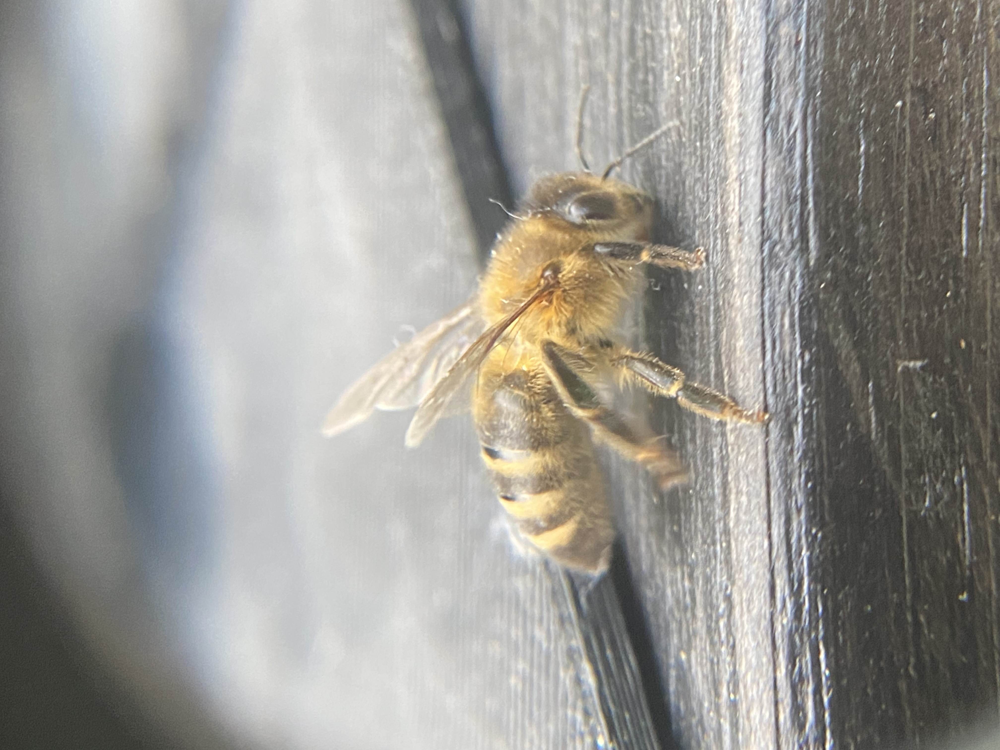

Projektbeskrivelse
Jeg er i gang med at bygge et system, der kan genkende varroamider på bier ved stadeindgangen – men teknikken kunne også bruges til at opdage andre insekter, som fx den asiatiske hveps.
Bierne går igennem en lille tunnel, hvor jeg tager nærbilleder, og bagefter analyserer en computer billederne for mider. Her er billeder fra de allerførste test, hvor jeg leder efter den bedste lys- og kameraopsætning, så miderne bliver nemme at se. Det er stadig tidligt i projektet, men opløsningen ser lovende ud.
Sådan vil jeg gøre
- Stikprøver: starte med fx 100 bier i højsæsonen.
- Analyse: Når en bi flyver gennem tunnelen, tager kameraet et billede i høj opløsning. OpenCV (et billedbehandlingsværktøj) bruges først til at finde selve bien i billedet, så baggrunden ignoreres. Derefter bruger systemet YOLO (en AI-model til objektdetektion) til at lede efter varroamider. Disse små, mørkebrune parasitter sidder ofte på bienes ryg eller mellem kropssegmenterne, og AI’en er trænet til at genkende dem ud fra form og farve. Hvis en mide registreres, gemmes billedet med dato, tid og en markering af, hvor miden sidder. På den måde kan udviklingen af varroa-niveauet følges over tid uden at åbne bistadet.
- Lagring: resultater gemmes i en SQLite-database, så udviklingen kan følges over tid.
- Visning: når systemet kører, laver jeg et link til de billeder, hvor der er fundet varroa.
Målet er at opgradere til et bedre USB-makrokamera, men allerede nu kan jeg sidde hjemme og se mine bier flyve ind og ud.